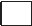

Exercises

1. Introduction to AI
 What
is
Intelligence?
What
is
Intelligence?
Intelligence means being smart and knowing how to do things like:
Thinking
Solving problems
Making good choices
Learning new things
Activity - 1
Use your intelligence and Tick (✓) the ones that are a good choice or cross (✘) the ones that are not.
You see someone fall on the playground. You help them up.
 You grab a toy from your friend without asking.
You say “please” and “thank you.”
Natural Intelligence
 Natural
Intelligence
is
the
brainpower
that
humans and animals are born
with. People use
natural
intelligence
to:
Natural
Intelligence
is
the
brainpower
that
humans and animals are born
with. People use
natural
intelligence
to:
Think and ask questions
Learn new things
Solve problems
Remember what we see and hear
Talk and understand others
Animals use Natural Intelligence too. A dog can perform tricks, and birds know how to build nests.


 The
student
will
see
images
of
fish
and
things
that
are
not
fish.
The
student
will
see
images
of
fish
and
things
that
are
not
fish. Click
“Run”
Click
“Run”